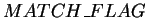
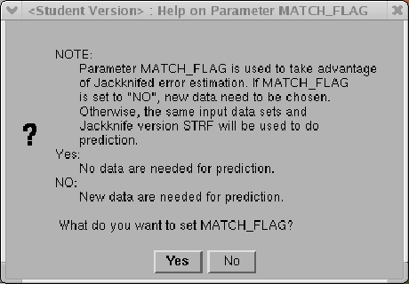
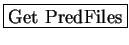
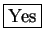
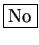

Next: Prediction
Up: Prediction
Previous: Prediction
Contents
The STRFPAK uses a parameter, , to keep track of the users choice regarding Jackknifing. After clicking the
Figure 3.16:
A questioning window for implementing cross-validation
|
 |
 button in the main window, a window
shown in Figure 3.16
appears waiting for your selection.
The value of the is set
based on your selection.
If you click  button, the STRFPAK applies the cross-validation
to do prediction. Otherwise, the STRFPAK predicts the neuronal response
to a new stimulus you provide. If you click  button, the STRFPAK:
Get Prediction Input window pops out. This window's layout and buttons
are exactly the same as the Get Files window. For any questions
or problems, please refer to the previous Get Files section.
2004-08-09